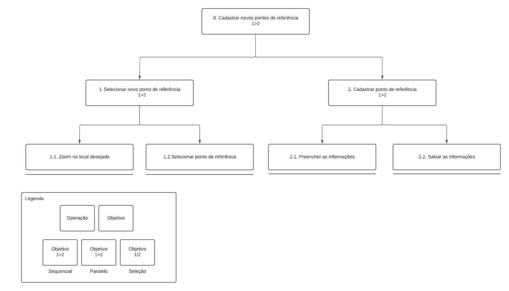

Análise de Tarefas
Introdução
A análise de tarefas é uma abordagem sistemática e metodológica usada para compreender como as pessoas realizam suas atividades na aplicação. Para isso, é necessário identificar os objetivos, ações, interações e os desafios enfrentados durante o uso do site. Essa compreensão é fundamental para o desenvolvimento de interfaces mais eficientes, intuitivos e amigáveis. As 6 tarefas analisadas do OpenStreetMap foram:
Metodologias
No geral, é preciso determinar qual é a tarefa e compreeender o propósito geral por trás dela e subdividir em tarefas menores. Para determinar as tarefas, utilizamos as informações do questionários, perfil do usuário e dos cenários realizados.
Foram escolhidas as metodologias mais usadas para a atividade, as quais são:
- Análise Hierárquica de Tarefas (HTA – Hierarchical Task Analysis)
- GOMS (Goals, Operators, Methods, e Selection Rules)
Essa parte da análise das tarefas é importante para entender quais as tarefas principaís que os usuários realizam, assim, mais para frente poderão ser validadas e depois utilizadas para tomar decisões, principalmente na questão de design para poder atender melhor os usuários.
1. HTA
A HTA ajuda a identificar a estrutura hierárquica das tarefas, decompondo-as em sub-tarefas menores e mais gerenciáveis. Isso permite uma compreensão mais detalhada de como as tarefas são executadas, identificando as relações entre as sub-tarefas e ajudando a identificar gargalos e oportunidades de melhoria.
A análise hierárquica de tarefas possui os seguintes elementos:
- Tarefa: Qualquer parte de um trabalho a ser realizado;
- Objetivo: um estado final, que pode ser definido por eventos ou valores fisicamente observáveis;
- Subobjetivo: Um objetivo de alto nível é dividido em subobjetivos;
- Plano: O conjunto de subobjetivos de um objetivo e suas relações consiste em um plano;
- Operação: Circunstâncias de ativação do objetivo (input ou entrada), atividades ou ações (actions) para alcançá-lo e condições que indicam seu atingimento (feedback).
As tarefas escolhidas para serem analisadas com esta metodologia foram a de "Cadastrar novos pontos de referência" e "Buscar locais desejados". Esses formam os usos mais apontados pelos usuário, por meio do formulário usado para construir o perfil do usuário.
A análise hierárquica de tarefas foi feita por meio das tabelas (Tabela 1 e 2) e por seu respectivo diagrama (Figura 2 e 3). Utiliza-se a notação representada na Figura 1.

Figura 1: Elementos do diagrama (Fonte: [1]).
Tarefa 1 - Cadastrar ponto de referência
| Objetivos/Operações | Problemas e recomendações |
|---|---|
| 0. Cadastrar novos pontos de referência (1>2) | input: Acesso a página inicial; feedback: tela de pesquisa e mapa geral plano: selecionar novo ponto de refereência e cadastrar-lo recomendação: permitir que usuário cadastre tarefa a partir da tela inicial |
| 1. Selecionar novo ponto de refereência (1>2) | plano: dar zoom no mapa para o local desejado e selecionar o ponto de referência no mapa recomendação: abrir o mapa com zoom na área em que o usuário esta |
| 1.1 Dar zoom no mapa para o local desejado | |
| 1.2 Selecionar o ponto de referência no mapa | |
| 2 Cadastrar ponto de referÊncia (1>2) | plano: preencher as informações sobre o ponto de referência e salvar recomendação: salvar automáticamente, sem precisar apertar botão |
| 2.1 Preencher as informações sobre o ponto de referência | |
| 2.2 Salvar as informações sobre o ponto de referência |
Tabela 1: Análise Hierárquica de Tarefas para o objetivo "Cadastrar novos pontos de referência" (Fonte: Raquel, 2022).

Figura 2: Diagrama da Análise Hierárquica de Tarefas para o objetivo "Cadastrar novos pontos de referência" (Fonte: Raquel, 2022).
Tarefa 2 - Buscar locais desejados
| Objetivos/Operações | Problemas e recomendações |
|---|---|
| 0. Buscar locais (1>2) | input: Acesso a página inicial; feedback: tela de pesquisa e mapa geral |
| 1. Navegar até a barra de pesquisa (1>2) | input: Acesso à barra de pesquisa feedback: Tela de pesquisa e mapa geral |
| 1.1 Digitar o nome do local desejado | input: Digitar o nome do local desejado feedback: Resultados da pesquisa |
| 2. Selecionar o local correto na lista de resultados da pesquisa | input: Selecionar o local correto na lista de resultados da pesquisa feedback: Informações detalhadas sobre o local |
Tabela 2: Análise Hierárquica de Tarefas para o objetivo "Buscar locais desejados" (Fonte: Guilherme, 2023).
Figura 3: Diagrama da Análise Hierárquica de Tarefas para o objetivo "Buscar locais desejados" (Fonte: Guilherme, 2023).
2. GOMS
O GOMS analisa as metas dos usuários, os operadores disponíveis, os métodos seguidos e as regras de seleção utilizadas. Essa análise permite identificar os passos e as ações necessárias para realizar uma tarefa, bem como possíveis gargalos cognitivos. Com base nessas informações. Dentre a família de modelos GOMS foi selecionado o modelo CMN-GOMS para realizar a análise.
A tarefas escolhida para ser analisada com esta metodologia foi a de "Adicionar uma nova estrada no OpenStreetMap", correspondente ao Cenários 1, 2 e 3.
Tarefa 3 - Adicionar uma nova estrada
GOAL 0: Adicionar uma nova estrada
GOAL 1: Selecionar edição
OP 1.1: Clicar no botão editar
GOAL 2: Selecionar linha
OP 2.1: Clicar no botão linha
GOAL 3: Selecionar edição
OP 3.1: Clicar no ponto onde começa a estrada
OP 3.2: Clicar nos demais pontos que ligam a estrda
OP 3.3: Apertar ESC ou clique sobre o último ponto para finalizar
GOAL 4: Selecione o tipo de elemento
OP 4.1: Clique na pasta vias principais ou secundárias
OP 4.2: Clique no tipo de recurso desejado
GOAL 5: Preencha as informações da estrada
OP 5.1: Clique nos espaços que deseja preencher
OP 5.2: Digite a informação
GOAL 6: Salve os dados da estrada
OP 6.1: Clique no botão salvar ou aperte CTRL+S
Código 1: GOMS - Tarefa 3 (Fonte: Raquel, 2023).
Tarefa 4 - Compartilhar localização em tempo real
GOAL 0: Compartilhar localização em tempo real
GOAL 1: Exibir sua localização
OP 1.1: Clicar no botão de exibir localização
GOAL 2: Abre a opçpão de compartilhamento
OP 2.1: Clicar no botão de compartilhar localização
GOAL 3: Selecionar modo de compartilhamento
OP 3.1: Clicar nas opções desejada (links, Geo Uri ou Imagem...)
OP 3.2: Clicar no botão baixar para baixar a imagem ou copie o link desejado
Código 2: GOMS - Tarefa 4 (Fonte: Raquel, 2023).
Tarefa 5 - Explorar local turístico
GOAL 0: Explorar local turístico
GOAL 1: Navegar até a barra de pesquisa do OpenStreetMap
OP 1.1: Mover o cursor para a barra de pesquisa
GOAL 2: Digitar o nome do local turístico
OP 2.1: Digitar o nome usando o teclado
GOAL 3: Selecionar o local correto na lista de resultados da pesquisa
OP 3.1: Clicar no local correto da lista
GOAL 4: Aproxime para consultar o local
OP 4.1: Role o scroll do mouse para cima até poder ver os elementos
GOAL 5: Selecionar o botão consultar elementos
OP 5.1: Clique nos botão consultar elementos que é último da lateral direita
GOAL 6: Selecione os elementos no mapa
OP 6.1: Clique nos elementos e obtenha mais informações sobre o local turístico
Código 3: GOMS - Tarefa 5 (Fonte: Raquel, 2023).
Bibliografia
[1] Barbosa, S. D. J.; Silva, B. S. da; Silveira, M. S.; Gasparini, I.; Darin, T.; Barbosa, G. D. J. (2021) Interação Humano-Computador e Experiência do usuário. Autopublicação. ISBN: 978-65-00-19677-1.
Histórico de Versão
| Data | Data Prevista de Revisão | Versão | Descrição | Autor | Revisor |
|---|---|---|---|---|---|
| 07/05/2023 | 08/05/2023 | 1.0 | Criação do documento | Raquel | Daniel |
| 19/05/2023 | 20/05/2023 | 2.0 | Correção do documento | Raquel e Guilherme | Daniel |
| 19/06/2023 | 19/06/2023 | 2.1 | Verificação do Documento | Daniel | Guilherme |